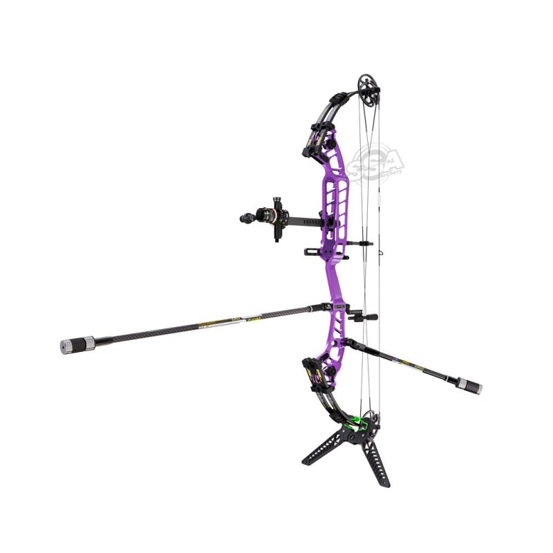
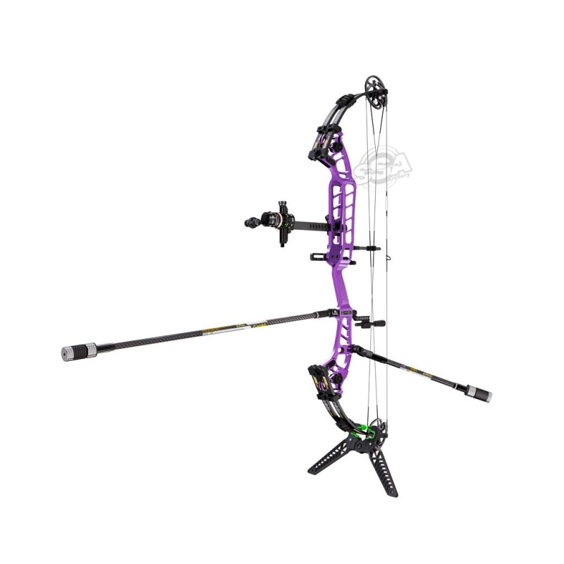
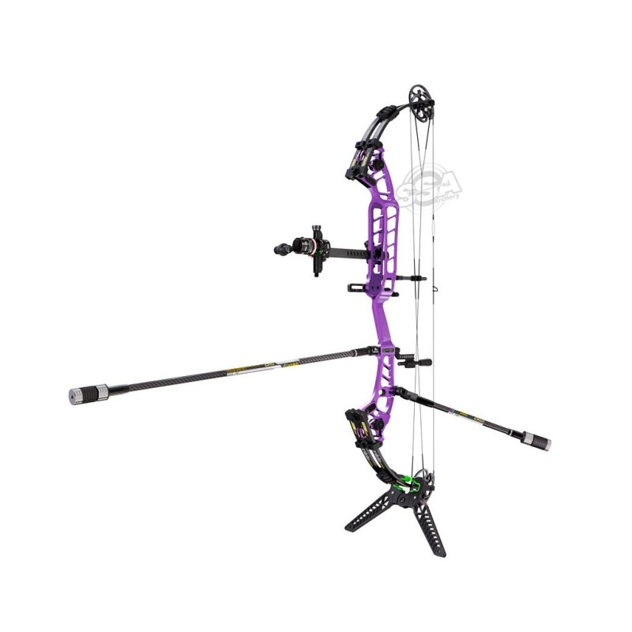
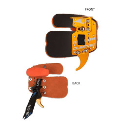
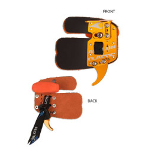

Matériel
Les types d'arc
Le traditionnel SV (arc traditionnel sans viseur) , L'arc AV( traditionnel avec viseur) et l'arc à poulie(très puissant avec viseur):

 

Le tir à l'arc est une activité physique et mentale qui exige de la patience, de la précision et un contrôle de soi. Il existe plusieurs formes de tir à l'arc, comme l'arc traditionnel, l'arc à poulies, et le tir en compétition avec des cibles fixes traditionnel ou des cibles en 3D. De plus il est important d'avoir du bon matériel (aller chercher son matériel dans une vraie archerie).
Le traditionnel SV (arc traditionnel sans viseur) , L'arc AV( traditionnel avec viseur) et l'arc à poulie(très puissant avec viseur):

L'arc, les flèches, la cible, et les protections sont les éléments de base du tir à l'arc. Chaque composant doit être choisi en fonction de l'usage et des préférences de l'archer.
 

L'arc, les flèches, la cible, et les protections sont les éléments de base du tir à l'arc. Chaque composant doit être choisi en fonction de l'usage et des préférences de l'archer.
Les techniques de tir sont variées : posture, visée, respiration, et décoche de la corde sont autant d'éléments à maîtriser pour un tir réussi. Ces mouvements sont long à mettre en place et nécessite une rigueur importante afin de ne pas tirer d'une mauvaise manière